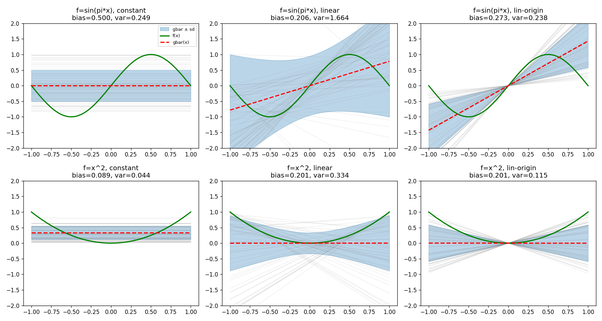
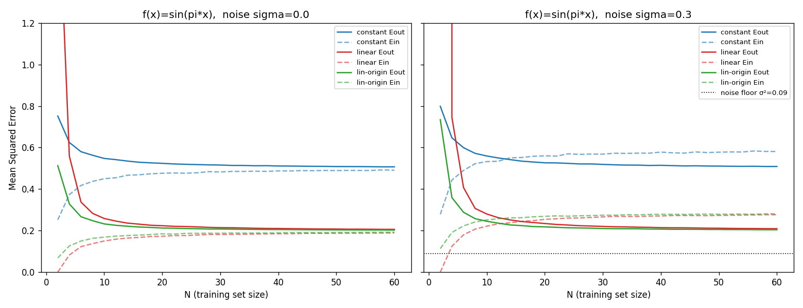

<title>Bias-Variance & Learning Curves</title>
<style>
  :root{--bg:#0f1420;--panel:#1a2233;--ink:#e8edf6;--mut:#8fa0bd;--line:#2b3651;
        --f:#38d39f;--gbar:#ff5d73;--band:rgba(90,160,255,.28);--samp:rgba(180,195,230,.14)}
  *{box-sizing:border-box}
  body{margin:0;background:var(--bg);color:var(--ink);
       font:16px/1.6 system-ui,"Segoe UI",Roboto,"Noto Sans Thai",sans-serif}
  header,section{max-width:960px;margin:0 auto;padding:34px 22px}
  header{text-align:center;padding-top:56px}
  h1{font-size:2rem;margin:0 0 6px}
  h2{font-size:1.35rem;margin:0 0 4px;color:var(--f)}
  .sub{color:var(--mut)}
  section{border-top:1px solid var(--line)}
  .panel{background:var(--panel);border:1px solid var(--line);border-radius:14px;padding:18px;margin-top:16px}
  .ctrls{display:flex;flex-wrap:wrap;gap:18px;align-items:center;margin-bottom:14px}
  .ctrls label{font-size:.85rem;color:var(--mut);display:block;margin-bottom:4px}
  select,input[type=range]{accent-color:var(--f)}
  select{background:#111a2b;color:var(--ink);border:1px solid var(--line);border-radius:8px;padding:6px 10px}
  canvas{width:100%;height:auto;background:#0c111c;border-radius:10px;display:block}
  .stats{display:flex;gap:22px;flex-wrap:wrap;margin-top:12px}
  .stat{background:#111a2b;border:1px solid var(--line);border-radius:10px;padding:10px 16px;min-width:120px}
  .stat b{display:block;font-size:1.5rem;color:var(--f)}
  .stat.v b{color:var(--gbar)}
  .stat span{font-size:.8rem;color:var(--mut)}
  .legend{font-size:.82rem;color:var(--mut);margin-top:10px}
  .legend i{display:inline-block;width:22px;height:0;border-top:3px solid;vertical-align:middle;margin:0 5px}
  img{width:100%;border-radius:12px;border:1px solid var(--line);margin-top:8px}
  ul{color:var(--mut)} li{margin:4px 0} b.k{color:var(--ink)}
  footer{text-align:center;color:var(--mut);padding:40px;font-size:.85rem}
</style>

<header>
  <h1>Bias–Variance &amp; Learning Curves</h1>
  <p class="sub">การวิเคราะห์ความเอนเอียงและความแปรปรวนของแบบจำลองเชิงเส้น · Machine Learning</p>
</header>

<section>
  <h2>ทฤษฎีสั้น ๆ</h2>
  <p><b class="k">Bias</b> = แบบจำลอง<em>โดยเฉลี่ย</em>พลาดจากฟังก์ชันจริงแค่ไหน — โมเดลง่ายเกิน → bias สูง<br>
     <b class="k">Variance</b> = แบบจำลองดิ้นตามชุดข้อมูลแค่ไหน — โมเดลซับซ้อน → variance สูง</p>
  <p class="sub">E<sub>out</sub> = Bias² + Variance + σ²  (noise ที่ลดไม่ได้)</p>
</section>

<section>
  <h2>1 · ลองปรับ Bias–Variance เอง</h2>
  <p class="sub">สุ่มชุดข้อมูล N จุดหลายพันชุด → fit แล้ววาด — ดู bias/variance เปลี่ยนสดตามที่เลือก</p>
  <div class="panel">
    <div class="ctrls">
      <div><label>ฟังก์ชันเป้าหมาย f(x)</label>
        <select id="target"><option value="sin">sin(πx)</option><option value="sq">x²</option></select></div>
      <div><label>แบบจำลอง</label>
        <select id="model"><option value="const">ค่าคงที่ h=b</option>
          <option value="linear" selected>เชิงเส้น h=ax+b</option>
          <option value="origin">ผ่านจุดกำเนิด h=ax</option></select></div>
      <div><label>จำนวนจุดต่อชุด N = <span id="nval">2</span></label>
        <input type="range" id="nsize" min="2" max="20" value="2"></div>
    </div>
    <canvas id="bvcanvas" width="900" height="380"></canvas>
    <div class="stats">
      <div class="stat"><b id="biasOut">–</b><span>Bias²</span></div>
      <div class="stat v"><b id="varOut">–</b><span>Variance</span></div>
      <div class="stat"><b id="eoutOut">–</b><span>E_out = Bias²+Var</span></div>
    </div>
    <p class="legend"><i style="border-color:var(--f)"></i>f(x) จริง
      &nbsp; <i style="border-color:var(--gbar);border-top-style:dashed"></i>ḡ(x) เฉลี่ย
      &nbsp; <i style="border-color:#5aa0ff"></i>ช่วง ±sd (variance)</p>
    <p class="sub" style="margin:8px 0 0">ลอง N=2 กับ linear → variance ระเบิด; เพิ่ม N → variance ยุบ</p>
  </div>
</section>

<section>
  <h2>2 · Learning Curve กับ noise</h2>
  <p class="sub">E_out เฉลี่ยเทียบจำนวนข้อมูลฝึก N — ลาก slider เพิ่ม noise ดู noise floor σ²</p>
  <div class="panel">
    <div class="ctrls">
      <div><label>ฟังก์ชันเป้าหมาย</label>
        <select id="lcTarget"><option value="sin">sin(πx)</option><option value="sq">x²</option></select></div>
      <div><label>noise σ = <span id="sval">0.30</span></label>
        <input type="range" id="sigma" min="0" max="0.6" step="0.05" value="0.3"></div>
    </div>
    <canvas id="lccanvas" width="900" height="380"></canvas>
    <p class="legend"><i style="border-color:#5aa0ff"></i>constant
      &nbsp; <i style="border-color:var(--gbar)"></i>linear
      &nbsp; <i style="border-color:var(--f)"></i>lin-origin
      &nbsp; <i style="border-color:#888;border-top-style:dotted"></i>noise floor σ²</p>
  </div>
</section>

<section>
  <h2>ผลเต็ม (จากสคริปต์ Python)</h2>
  <p class="sub">Bias/Variance ครบ 3 โมเดล × 2 เป้าหมาย — Analytical ≈ Simulation ยืนยันความถูกต้อง</p>
  
  
</section>

<section>
  <h2>สรุป</h2>
  <ul>
    <li><b class="k">โมเดลง่าย</b> (ค่าคงที่): bias สูง, variance ต่ำ — เหมาะข้อมูลน้อย/noise เยอะ</li>
    <li><b class="k">โมเดลซับซ้อน</b> (เชิงเส้น): bias ต่ำ, variance สูง — เสี่ยง overfit เมื่อข้อมูลน้อย</li>
    <li>ที่ N=2 + noise → E_out ระเบิดจาก variance; N มาก → ทุกเส้นลู่เข้า</li>
    <li><b class="k">noise floor σ²</b> คือ irreducible error — ลดต่ำกว่านี้ไม่ได้ไม่ว่าโมเดลดีแค่ไหน</li>
  </ul>
</section>

<footer>เลื่อน slider ระหว่างนำเสนอเพื่อโชว์ tradeoff แบบสด · คำนวณ Monte Carlo ในเบราว์เซอร์</footer>

<script>
// ---- โมเดล + เป้าหมาย (พอร์ตจาก models.py) ----
const TARGET = {sin:x=>Math.sin(Math.PI*x), sq:x=>x*x};
const mean = a=>a.reduce((s,v)=>s+v,0)/a.length;
function fit(model, xs, ys){           // คืน [a,b] เสมอ; predict = a*x+b
  if(model==="const") return [0, mean(ys)];
  if(model==="origin"){let sxy=0,sxx=0;for(let i=0;i<xs.length;i++){sxy+=xs[i]*ys[i];sxx+=xs[i]*xs[i];}
    return [sxx>1e-12?sxy/sxx:0, 0];}
  const mx=mean(xs),my=mean(ys);       // linear least squares
  let sxy=0,sxx=0;for(let i=0;i<xs.length;i++){sxy+=(xs[i]-mx)*(ys[i]-my);sxx+=(xs[i]-mx)**2;}
  const a=sxx>1e-12?sxy/sxx:0; return [a, my-a*mx];
}
const rnd=(n)=>Array.from({length:n},()=>Math.random()*2-1);
const GRID=Array.from({length:201},(_,i)=>-1+i*0.01);

// Monte Carlo: คืน {gbar[], sd[], bias, variance}
function monteCarlo(f, model, N, M=1500, sigma=0){
  const G=[];                          // G[m][k] = ทำนายชุด m ที่ grid k
  for(let m=0;m<M;m++){
    const x=rnd(N), y=x.map(v=>f(v)+sigma*gauss());
    const [a,b]=fit(model,x,y);
    G.push(GRID.map(gx=>a*gx+b));
  }
  const gbar=GRID.map((_,k)=>mean(G.map(g=>g[k])));
  const sd=GRID.map((_,k)=>{const mu=gbar[k];return Math.sqrt(mean(G.map(g=>(g[k]-mu)**2)));});
  const bias=mean(GRID.map((gx,k)=>(gbar[k]-f(gx))**2));
  const variance=mean(sd.map(s=>s*s));
  return {gbar,sd,bias,variance,sample:G[0]};
}
let g2=null;                           // Box-Muller (คู่)
function gauss(){if(g2!==null){const v=g2;g2=null;return v;}
  const u=Math.max(1e-9,Math.random()),r=Math.sqrt(-2*Math.log(u)),t=2*Math.PI*Math.random();
  g2=r*Math.sin(t);return r*Math.cos(t);}

// ---- วาดกราฟ bias-variance ----
const bv=document.getElementById("bvcanvas"), bvx=bv.getContext("2d");
const X=x=>40+(x+1)/2*(bv.width-60), Y=y=>bv.height/2-y/2.2*(bv.height/2-20);
function drawBV(){
  const f=TARGET[target.value], N=+nsize.value;
  nval.textContent=N;
  const {gbar,sd,bias,variance}=monteCarlo(f,model.value,N);
  bvx.clearRect(0,0,bv.width,bv.height);
  bvx.strokeStyle="#243049";bvx.beginPath();bvx.moveTo(40,Y(0));bvx.lineTo(bv.width,Y(0));bvx.stroke();
  bvx.fillStyle="getComputedStyle";                       // ±sd band
  bvx.fillStyle="rgba(90,160,255,.25)";bvx.beginPath();
  GRID.forEach((gx,k)=>{const px=X(gx),py=Y(Math.max(-2.2,Math.min(2.2,gbar[k]+sd[k])));k?bvx.lineTo(px,py):bvx.moveTo(px,py);});
  for(let k=GRID.length-1;k>=0;k--)bvx.lineTo(X(GRID[k]),Y(Math.max(-2.2,Math.min(2.2,gbar[k]-sd[k]))));
  bvx.closePath();bvx.fill();
  line(gbar,"#ff5d73",2,true); line(GRID.map(f),"#38d39f",2,false);
  biasOut.textContent=bias.toFixed(3);
  varOut.textContent=variance.toFixed(3);
  eoutOut.textContent=(bias+variance).toFixed(3);
}
function line(ys,color,w,dash){
  bvx.strokeStyle=color;bvx.lineWidth=w;bvx.setLineDash(dash?[7,5]:[]);bvx.beginPath();
  GRID.forEach((gx,k)=>{const py=Y(Math.max(-2.2,Math.min(2.2,ys[k])));k?bvx.lineTo(X(gx),py):bvx.moveTo(X(gx),py);});
  bvx.stroke();bvx.setLineDash([]);
}
[target,model,nsize].forEach(e=>e.addEventListener("input",drawBV));

// ---- วาด learning curve ----
const lc=document.getElementById("lccanvas"), lcx=lc.getContext("2d");
const Ns=[]; for(let n=2;n<=40;n+=2)Ns.push(n);
const LCCOL={const:"#5aa0ff",linear:"#ff5d73",origin:"#38d39f"};
function eout(f,model,N,sigma,trials=400){
  let s=0;
  for(let t=0;t<trials;t++){
    const x=rnd(N), y=x.map(v=>f(v)+sigma*gauss()), [a,b]=fit(model,x,y);
    s+=mean(GRID.map(gx=>(a*gx+b-f(gx))**2));
  }
  return s/trials;
}
function drawLC(){
  const f=TARGET[lcTarget.value], sigma=+sigmaEl.value, YMAX=1.2;
  sval.textContent=sigma.toFixed(2);
  const LX=n=>50+(n-2)/38*(lc.width-70), LY=e=>lc.height-30-Math.min(e,YMAX)/YMAX*(lc.height-50);
  lcx.clearRect(0,0,lc.width,lc.height);
  lcx.strokeStyle="#243049";lcx.strokeRect(50,20,lc.width-70,lc.height-50);
  lcx.fillStyle="#8fa0bd";lcx.font="12px system-ui";
  lcx.fillText("N →",lc.width-40,lc.height-12);lcx.fillText("E_out",8,30);
  for(const m of ["const","linear","origin"]){
    lcx.strokeStyle=LCCOL[m];lcx.lineWidth=2;lcx.beginPath();
    Ns.forEach((n,i)=>{const px=LX(n),py=LY(eout(f,m,n,sigma));i?lcx.lineTo(px,py):lcx.moveTo(px,py);});
    lcx.stroke();
  }
  if(sigma>0){const fl=sigma*sigma;lcx.strokeStyle="#888";lcx.setLineDash([3,4]);
    lcx.beginPath();lcx.moveTo(50,LY(fl));lcx.lineTo(lc.width-20,LY(fl));lcx.stroke();lcx.setLineDash([]);
    lcx.fillStyle="#888";lcx.fillText("σ²="+fl.toFixed(2),lc.width-90,LY(fl)-4);}
}
const sigmaEl=document.getElementById("sigma");
[lcTarget,sigmaEl].forEach(e=>e.addEventListener("input",drawLC));

// ---- self-check: constant/x² bias ควรได้ ~0.089 (ตรงกับ Python) ----
console.assert(Math.abs(monteCarlo(TARGET.sq,"const",2,3000).bias-0.089)<0.03,
  "bias self-check failed");

drawBV(); drawLC();
</script>

